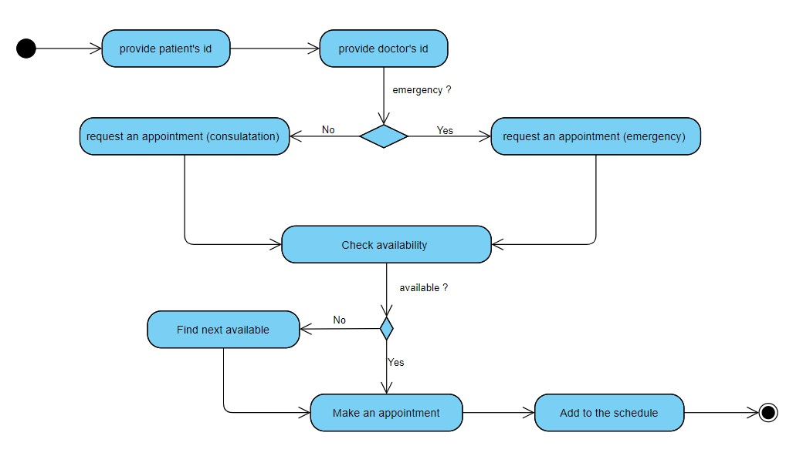

Unified Modeling Language - exercises
Description and self evaluation of assignments (Mid-module and System Implementation).
Description and self evaluation of assignments (Mid-module and System Implementation).
Reflections:
The exercise was about creating Class Diagram for a supermarket. If it was a software for an online supermarket I would definitely stay with Customer Class. However, if it was a regular supermarket, a Customer Class would not be necessary in my opinion. I improved my class diagram by adding proper relationships, and I realized that no all variables and methods should have be public.

Learning outcomes:
1) I have gain an ability to read and analyse class diagrams, to implement their structure into code/script. Moreover, I am able to do my own system design and organize my ideas in class diagrams showing proper relationships and inheritance.
2) Class diagrams are very useful graphical representation of system design in OOP. However, it is important to properly choose what element of system should be a class. If it has data and behaviour, it should be a class. However it doesn’t mean that data without behaviour should not be represented by a class. It can, and this approach can be clearly found in Kotlin, in which Data Classes are commonly used.
3) There are three steps of creating class diagrams: a) Identify classes, its attributes and behaviours; b) find relationships between classes; c) Create the structure of the system based on classes and their relationships.
4) I have learnt variety of relationships between classes that are implemented in class diagrams: association, dependency, aggregation, composition inheritance.
5) Encapsulation is a very important aspect of object oriented programming. Private variables basically cannot be accessible form outside of classes. Protected variables, however, are accessible only for subclasses.
UML is a specialized language that consists a few diagrams. Those diagrams formally describe the structure of the software and its processes. Within the course I have learned three type of diagrams that belong to UML: a class diagram, a sequence diagram and activity diagram. For one of the seminar, my task was to prepare these diagrams based on the described scenario. Below I present my proposal:


Proposed improvements
The Class Diagram:
Doctor Class should have another attribute – a list of assigned patients to it. The list should keep no more than 500 Patient objects currently having booked appointment to a doctor, because I used aggregation relationship.
b) The relationship between Prescription and Appointment is composition. The appointment should have another attribute prescription (None from default), and it could be overwritten by a doctor if a prescription is needed.
c) Patient Class don’t have “request appointment” and “repeat prescription request” methods. That is a major mistake in my design. And if the Patient class may request for renewing prescription, Patient and Prescription class should be associated.
The Activity Diagram:
a) The action starts too late form “make an appointment”. It should start form Patient “request an appointment”, and provide all necessary data. I improved my activity diagram below:

Learning outcomes:
1) The sequence diagram is used to describe interactions between objects along with statements/actions that are sent between them. The basic purpose of SD is modelling how the system works, and it helps to have an overview of the communication between objects.
2) The activity diagram is a behavioural diagram that describes activity flow in the system. As far as I understood, this diagram shows the order of the actions what happens in the system step by step.
3) All these diagrams should complement each other to describe how the system works and they help with writing code based on the design architecture.